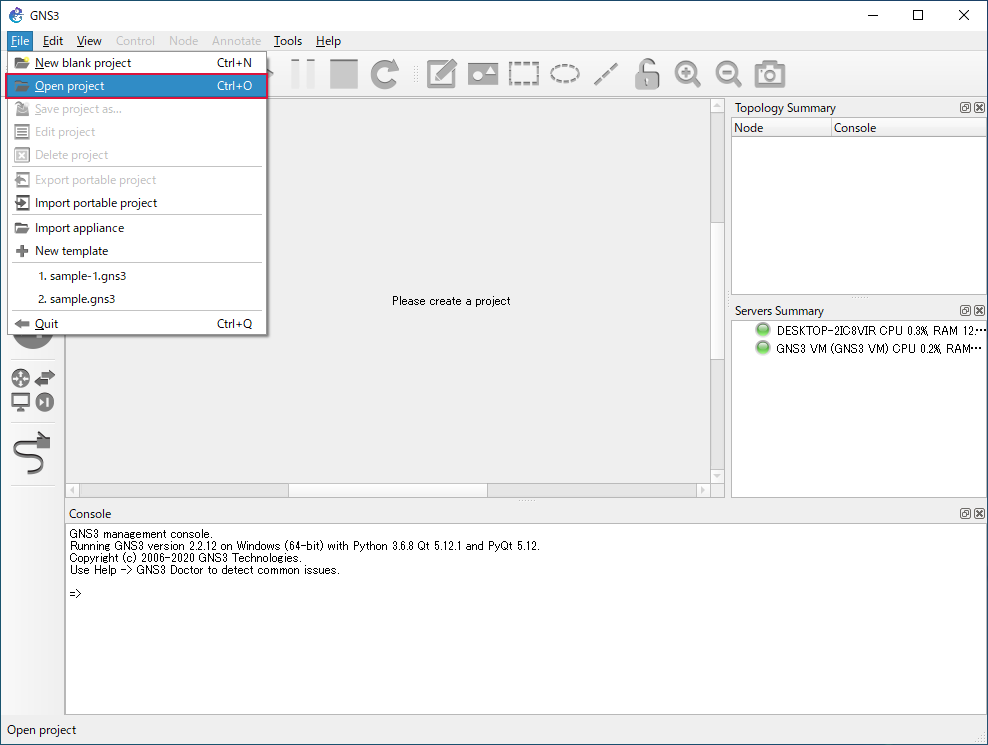

基本操作¶
起動¶
GNS3 を起動すると連動して GNS3 VM も起動します。
GNS3 を起動
GNS3 の起動終了 → プロジェクトの指定画面を表示
遅れて GNS3 VM が自動的に起動 → OK を押下
GNS3 VM の起動終了
IOS router テンプレートの作成¶
Edit をクリック
Preferences… をクリック

IOS routers をクリック
New をクリック
Run this IOS router on GNS3 VM を選択
Next をクリック
Browse… をクリック
IOS ファイルを選択
開く(O) をクリック
Yes をクリック
IOS ファイルのロード中
Next をクリック

Next をクリック
Next をクリック
Next をクリック
Idle-PC finder をクリック
Idle-PC 値の計算中
OK をクリック
Finish をクリック
OK をクリック
IOS router テンプレートの作成終了
ルーターのアイコンをクリック
取り込んだ IOS ファイルのルーターを確認
新規プロジェクトの作成¶
GNS3 は作成したネットワークなどは「プロジェクト」に保存します。そのため、ネットワークを作成する前にプロジェクトを作成しなければなりません。
File をクリック
New blank project をクリック
Name にプロジェクト名を入力
Location にプロジェクトを保存するフォルダーを指定
OK をクリック
プロジェクトの作成終了 → 左上にプロジェクト名を表示
作成したプロジェクトファイル
プロジェクトの保存¶
作成したネットワークをプロジェクトに保存します。
File をクリック
Save project as… をクリック

Name と Location を確認

OK をクリック
プロジェクトの保存終了
プロジェクトのロード¶
保存済みのプロジェクトをロード（呼び出）します。
File をクリック
Open project をクリック
ロードするプロジェクトファイルを指定
開く(O) をクリック

プロジェクトのロード終了